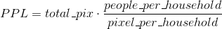

Motivation and Background
Densely populated urban areas in developing countries such as slums or refugee camps, are also the most vulnerable areas to natural and manmade disasters. This is the situation of many informal settlements in the world including our area of study: Dadaab (Ifo 2) - refugee camp. In our project we used satellite images to count the tents in order to estimate the number of Ifo 2 refugee camp population.
Literature review
Regarding the literature, most studies used various machine learning algorithms for buildings detection/ counting from RGB satellite images. For example, Guo, Shao et al. (2016) used convolutional neural network (CNN) and AdaBoost algorithms to identify village buildings from RGB images in Kaysone villages, Laos. AdaBoost was used together with other algorithms such as support vector machine (SVM) to extract buildings from RGB images on different urban areas (Dikmen and Halici 2014). Cote and Saeedi (2013) used edge detection and corners (Harris corner detection algorithm (Harris and Stephens 1988) to improve the geometric accuracy of buildings.
Methodology
Even studying the picture with our own eyes, or based on the histogram, we can say that the objects to be counted can be very well distinguished from the environment based on their intensity values
-
Find a threshold based on intensity (studying the histogram) so that only appropriate objects remain on the logical map
Problem with that: if there are clouds, they are bright as well and should be eliminated somehow, small artifacts as well
-
Blur the image and subtract it from the original one, this will move away the clouds, the bright house parts still remain
Studying the histogram, we can tell that the brighter the values are, the more possible it is for an object to be in our region of interest, so we have to find an appropriate threshold again
-
Use morphological opening to eliminate small artifacts and only keep the bigger objects
-
Label the connected components of the binary image and extract the region properties, like area
-
Based on these properties, we can estimate the numer of people living in the area with


Simply create an AND operator between 2 thresholds, this will eliminate the clouds and keep the most possible regions


References
Cote, M. and P. Saeedi (2013). "Automatic rooftop extraction in nadir aerial imagery of suburban regions using corners and variational level set evolution." Geoscience and Remote Sensing, IEEE Transactions on 51(1): 313-328
Dikmen, M. and U. Halici (2014). "A learning-based resegmentation method for extraction of buildings in satellite images." Geoscience and Remote Sensing Letters, IEEE 11(12): 2150-2153
Guo, Z., et al. (2016). "Identification of Village Building via Google Earth Images and Supervised Machine Learning Methods." Remote Sensing 8(4): 271
Harris, C. and M. Stephens (1988). A combined corner and edge detector. Alvey vision conference, Citeseer